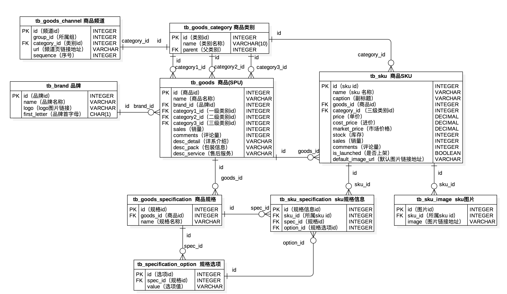

关系型数据库和MySQL概述
关系型数据库概述
数据持久化 - 将数据保存到能够长久保存数据的存储介质中，在掉电的情况下数据也不会丢失。
数据库发展史 - 网状数据库、层次数据库、关系数据库、NoSQL 数据库、NewSQL 数据库。
1970年，IBM的研究员E.F.Codd在Communication of the ACM上发表了名为A Relational Model of Data for Large Shared Data Banks的论文，提出了关系模型的概念，奠定了关系模型的理论基础。后来Codd又陆续发表多篇文章，论述了范式理论和衡量关系系统的12条标准，用数学理论奠定了关系数据库的基础。
关系数据库特点。
- 理论基础：关系代数（集合论、一阶谓词、关系运算）。
- 具体表象：用二维表（有行和列）组织数据。
- 编程语言：结构化查询语言（SQL）。
- DDL：数据定义语言
- DML：数据操作语言
- DCL：数据控制语言
- TCL：事务控制语言
ER模型（实体关系模型）和概念模型图。
ER模型，全称为实体关系模型（Entity-Relationship Model），由美籍华裔计算机科学家陈品山先生提出，是概念数据模型的高层描述方式，如下图所示。
- 实体 - 矩形框
- 属性 - 椭圆框
- 关系 - 菱形框
- 重数 - 1:1（一对一） / 1:N（一对多） / M:N（多对多）
实际项目开发中，我们可以利用数据库建模工具（如：PowerDesigner）来绘制概念数据模型，然后再设置好目标数据库系统，将概念模型转换成物理模型（如下图所示），最终生成创建二维表的 SQL（很多工具都可以根据我们设计的物理模型图以及设定的目标数据库来导出 SQL 或直接生成数据表）。

关系数据库产品。
- Oracle - 目前世界上使用最为广泛的数据库管理系统，作为一个通用的数据库系统，它具有完整的数据管理功能；作为一个关系数据库，它是一个完备关系的产品；作为分布式数据库，它实现了分布式处理的功能。在 Oracle 较新的版本中，还引入了多承租方架构，使用该架构可轻松部署和管理数据库云。
- DB2 - IBM 公司开发的、主要运行于 Unix（包括 IBM 自家的 AIX）、Linux、以及 Windows 服务器版等系统的关系数据库产品。DB2 历史悠久且被认为是最早使用 SQL 的数据库产品，它拥有较为强大的商业智能功能。
- SQL Server - 由 Microsoft 开发和推广的关系型数据库产品，最初适用于中小企业的数据管理，但是近年来它的应用范围有所扩展，部分大企业甚至是跨国公司也开始基于它来构建自己的数据管理系统。
- MySQL - MySQL 是开放源代码的，任何人都可以在 GPL（General Public License）的许可下下载并根据个性化的需要对其进行修改。MySQL 因为其速度、可靠性和适应性而备受关注。
- PostgreSQL - 在 BSD 许可证下发行的开放源代码的关系数据库产品。
MySQL 简介
MySQL 最早是由瑞典的 MySQL AB 公司开发的一个开放源码的关系数据库管理系统，该公司于2008年被昇阳微系统公司（Sun Microsystems）收购。在2009年，甲骨文公司（Oracle）收购昇阳微系统公司，因此 MySQL 目前也是 Oracle 旗下产品。
MySQL 在过去由于性能高、成本低、可靠性好，已经成为最流行的开源数据库，因此被广泛地应用于中小型网站开发。随着 MySQL 的不断成熟，它也逐渐被应用于更多大规模网站和应用，比如维基百科、谷歌（Google）、脸书（Facebook）、百度、淘宝、腾讯、新浪、去哪儿等都使用了 MySQL 来提供数据持久化服务。
甲骨文公司收购后昇阳微系统公司，大幅调涨 MySQL 商业版的售价，且甲骨文公司不再支持另一个自由软件项目 OpenSolaris 的发展，因此导致自由软件社区对于 Oracle 是否还会持续支持 MySQL 社区版（MySQL 的各个发行版本中唯一免费的版本）有所担忧，MySQL 的创始人麦克尔·维德纽斯以 MySQL 为基础，创建了 MariaDB（以他女儿的名字命名的数据库）分支。有许多原来使用 MySQL 数据库的公司（例如：维基百科）已经陆续完成了从 MySQL 数据库到 MariaDB 数据库的迁移。
安装 MySQL
Windows 环境
通过官方网站提供的下载链接下载“MySQL社区版服务器”安装程序，如下图所示，建议大家下载离线安装版的MySQL Installer。
运行 Installer，按照下面的步骤进行安装。
选择自定义安装。
选择需要安装的组件。
如果缺少依赖项，需要先安装依赖项。
准备开始安装。
安装完成。
准备执行配置向导。
执行安装后的配置向导。
配置服务器类型和网络。
配置认证方法（保护密码的方式）。
配置用户和角色。
配置Windows服务名以及是否开机自启。
配置日志。
配置高级选项。
应用配置。
可以在 Windows 系统的“服务”窗口中启动或停止 MySQL。
配置 PATH 环境变量，以便在命令行提示符窗口使用 MySQL 客户端工具。
打开 Windows 的“系统”窗口并点击“高级系统设置”。
在“系统属性”的“高级”窗口，点击“环境变量”按钮。
修改PATH环境变量，将MySQL安装路径下的
bin文件夹的路径配置到PATH环境变量中。配置完成后，可以尝试在“命令提示符”下使用 MySQL 的命令行工具。
Linux 环境
下面以 CentOS 7.x 环境为例，演示如何安装 MySQL 5.7.x，如果需要在其他 Linux 系统下安装其他版本的 MySQL，请读者自行在网络上查找对应的安装教程。
安装 MySQL。
可以在 MySQL 官方网站下载安装文件。首先在下载页面中选择平台和版本，然后找到对应的下载链接，直接下载包含所有安装文件的归档文件，解归档之后通过包管理工具进行安装。
wget https://dev.mysql.com/get/Downloads/MySQL-5.7/mysql-5.7.26-1.el7.x86_64.rpm-bundle.tar tar -xvf mysql-5.7.26-1.el7.x86_64.rpm-bundle.tar如果系统上有 MariaDB 相关的文件，需要先移除 MariaDB 相关的文件。
yum list installed | grep mariadb | awk '{print $1}' | xargs yum erase -y更新和安装可能用到的底层依赖库。
yum update yum install -y libaio libaio-devel接下来可以按照如下所示的顺序用 RPM（Redhat Package Manager）工具安装 MySQL。
rpm -ivh mysql-community-common-5.7.26-1.el7.x86_64.rpm rpm -ivh mysql-community-libs-5.7.26-1.el7.x86_64.rpm rpm -ivh mysql-community-libs-compat-5.7.26-1.el7.x86_64.rpm rpm -ivh mysql-community-devel-5.7.26-1.el7.x86_64.rpm rpm -ivh mysql-community-client-5.7.26-1.el7.x86_64.rpm rpm -ivh mysql-community-server-5.7.26-1.el7.x86_64.rpm可以使用下面的命令查看已经安装的 MySQL 相关的包。
rpm -qa | grep mysql配置 MySQL。
MySQL 的配置文件在
/etc目录下，名为my.cnf，默认的配置文件内容如下所示。cat /etc/my.cnf# For advice on how to change settings please see # http://dev.mysql.com/doc/refman/5.7/en/server-configuration-defaults.html [mysqld] # # Remove leading # and set to the amount of RAM for the most important data # cache in MySQL. Start at 70% of total RAM for dedicated server, else 10%. # innodb_buffer_pool_size = 128M # # Remove leading # to turn on a very important data integrity option: logging # changes to the binary log between backups. # log_bin # # Remove leading # to set options mainly useful for reporting servers. # The server defaults are faster for transactions and fast SELECTs. # Adjust sizes as needed, experiment to find the optimal values. # join_buffer_size = 128M # sort_buffer_size = 2M # read_rnd_buffer_size = 2M datadir=/var/lib/mysql socket=/var/lib/mysql/mysql.sock # Disabling symbolic-links is recommended to prevent assorted security risks symbolic-links=0 log-error=/var/log/mysqld.log pid-file=/var/run/mysqld/mysqld.pid通过配置文件，我们可以修改 MySQL 服务使用的端口、字符集、最大连接数、套接字队列大小、最大数据包大小、日志文件的位置、日志过期时间等配置。当然，我们还可以通过修改配置文件来对 MySQL 服务器进行性能调优和安全管控。
启动 MySQL 服务。
可以使用下面的命令来启动 MySQL。
service mysqld start在 CentOS 7 中，更推荐使用下面的命令来启动 MySQL。
systemctl start mysqld启动 MySQL 成功后，可以通过下面的命令来检查网络端口使用情况，MySQL 默认使用
3306端口。netstat -ntlp | grep mysql也可以使用下面的命令查找是否有名为
mysqld的进程。pgrep mysqld使用 MySQL 客户端工具连接服务器。
命令行工具：
mysql -u root -p说明：启动客户端时，
-u参数用来指定用户名，MySQL 默认的超级管理账号为root；-p表示要输入密码（用户口令）；如果连接的是其他主机而非本机，可以用-h来指定连接主机的主机名或IP地址。如果是首次安装 MySQL，可以使用下面的命令来找到默认的初始密码。
cat /var/log/mysqld.log | grep password上面的命令会查看 MySQL 的日志带有
password的行，在显示的结果中root@localhost:后面的部分就是默认设置的初始密码。进入客户端工具后，可以通过下面的指令来修改超级管理员（root）的访问口令为
123456。set global validate_password_policy=0; set global validate_password_length=6; alter user 'root'@'localhost' identified by '123456';说明：MySQL 较新的版本默认不允许使用弱口令作为用户口令，所以上面的代码修改了验证用户口令的策略和口令的长度。事实上我们不应该使用弱口令，因为存在用户口令被暴力破解的风险。近年来，攻击数据库窃取数据和劫持数据库勒索比特币的事件屡见不鲜，要避免这些潜在的风险，最为重要的一点是不要让数据库服务器暴露在公网上（最好的做法是将数据库置于内网，至少要做到不向公网开放数据库服务器的访问端口），另外要保管好
root账号的口令，应用系统需要访问数据库时，通常不使用root账号进行访问，而是创建其他拥有适当权限的账号来访问。再次使用客户端工具连接 MySQL 服务器时，就可以使用新设置的口令了。在实际开发中，为了方便用户操作，可以选择图形化的客户端工具来连接 MySQL 服务器，包括：
MySQL Workbench（官方工具）
Navicat for MySQL（界面简单友好）
macOS环境
macOS 系统安装 MySQL 是比较简单的，只需要从刚才说到的官方网站下载 DMG 安装文件并运行就可以了，下载的时候需要根据自己使用的是 Intel 的芯片还是苹果的 M1 芯片选择下载链接，如下图所示。
安装成功后，可以在“系统偏好设置”中找到“MySQL”，在如下所示的画面中，可以启动和停止 MySQL 服务器，也可以对 MySQL 核心文件的路径进行配置。
MySQL 基本命令
查看命令
- 查看所有数据库
show databases;
- 查看所有字符集
show character set;
- 查看所有的排序规则
show collation;
- 查看所有的引擎
show engines;
- 查看所有日志文件
show binary logs;
- 查看数据库下所有表
show tables;
获取帮助
在 MySQL 命令行工具中，可以使用help命令或?来获取帮助，如下所示。
查看
show命令的帮助。? show查看有哪些帮助内容。
? contents获取函数的帮助。
? functions获取数据类型的帮助。
? data types
其他命令
新建/重建服务器连接 -
connect/resetconnection。清空当前输入 -
\c。在输入错误时，可以及时使用\c清空当前输入并重新开始。修改终止符（定界符）-
delimiter。默认的终止符是;，可以使用该命令修改成其他的字符，例如修改为$符号，可以用delimiter $命令。打开系统默认编辑器 -
edit。编辑完成保存关闭之后，命令行会自动执行编辑的内容。查看服务器状态 -
status。修改默认提示符 -
prompt。执行系统命令 -
system。可以将系统命令跟在system命令的后面执行，system命令也可以缩写为\!。执行 SQL 文件 -
source。source命令后面跟 SQL 文件路径。重定向输出 -
tee/notee。可以将命令的输出重定向到指定的文件中。切换数据库 -
use。显示警告信息 -
warnings。退出命令行 -
quit或exit。